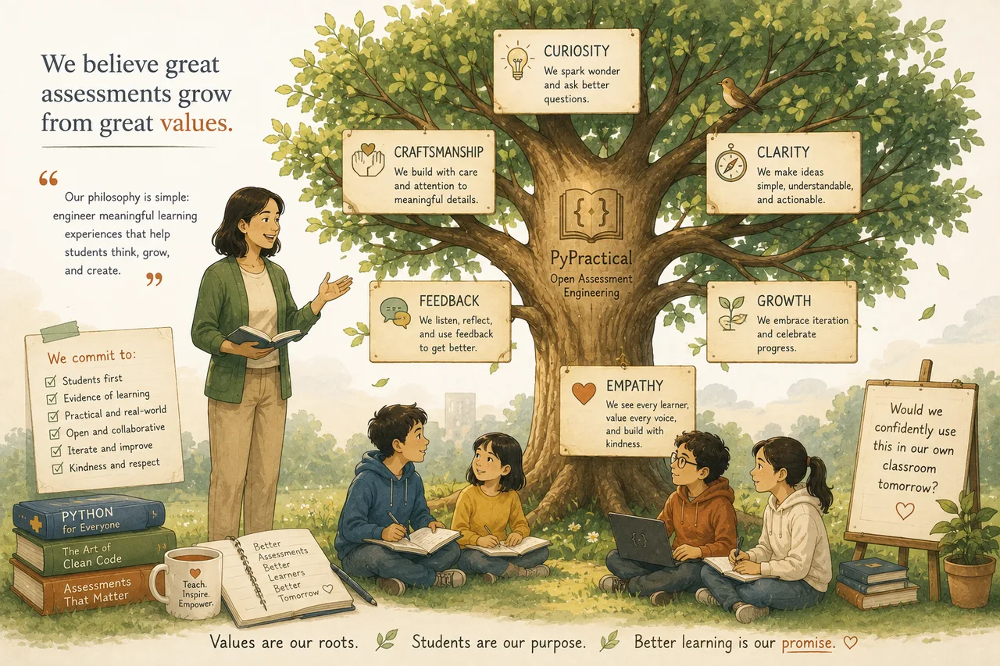

Principles that govern every assessment.
PyPractical isn't just a bank of problems. It's a disciplined approach — ten design principles, a confidence-first curriculum, and an assessment philosophy that treats assessment as part of learning.

Ten rules, one north star
Every assessment is shaped by the same ten principles before it reaches a classroom.
One New Idea
Every assessment introduces one primary concept; everything else reinforces prior learning.
Authentic Stories
Problems resemble software a beginner could imagine writing — not artificial math puzzles.
Natural Algorithms
Loops and conditionals arise from the story, not inserted just to test the construct.
Early Success
Students understand what the program must do within the first minute of reading.
Readability Matters
Clean code and meaningful names are part of good programming — and good assessment.
Objective Grading
Every practical is automatically gradable with unittest.
Classroom Reality
Built for real time limits; teacher workload is treated as a design constraint.
Equivalent Assessments
Different class sections receive equivalent — not identical — problems.
Open Education
Teachers are encouraged to adapt, improve, and redistribute the materials.
Continuous Improvement
Every classroom teaches something. Every assessment should evolve.
Confidence through achievable progression
Rather than asking “What Python features should students know?”, PyPractical asks a different question. Concepts are introduced one at a time, each practical a natural extension of the last — a sequence of small, achievable successes.
Confidence is one of the strongest predictors of persistence. So we design for gradual progression over unnecessary difficulty.
“What kind of programmer are they becoming?”— Curriculum Philosophy
“Assessment is never separated from learning. It is part of the learning journey.”— Assessment Philosophy
Assessment that illuminates
Assessment should support learning as much as measure it. Each assessment targets one primary objective, uses authentic tasks, and rewards correct application of concepts — not memorization. Different correct solutions are encouraged; we grade program behavior, not coding style.
From principles to practice
The principles become forty-one assessments across eleven families — explore them.